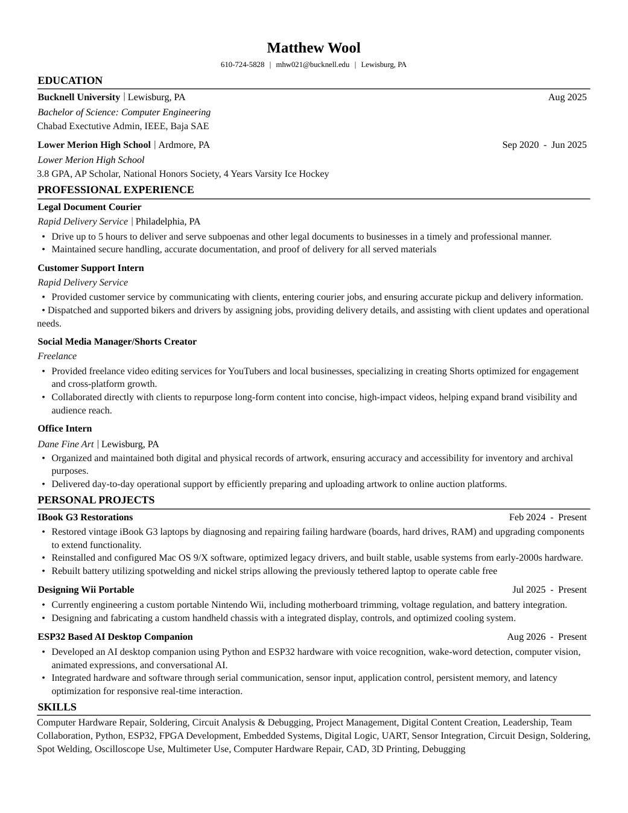

ABOUT & RESUMECurious about how things work.
Matthew Wool.
Curious about how things work.
Driven to build them.
I’m a computer engineering student at Bucknell University with a hands-on interest in electronics, embedded systems, and hardware restoration. My projects range from rebuilding vintage iBooks to developing an AI desktop companion and designing a portable Wii.
I enjoy troubleshooting, learning new tools, and turning ideas into working hardware. At Bucknell, I’m involved in Chabad, IEEE, and Baja SAE. Outside engineering, I’m into watches, retro gaming, and ice hockey.
Resume
Open PDF ↗